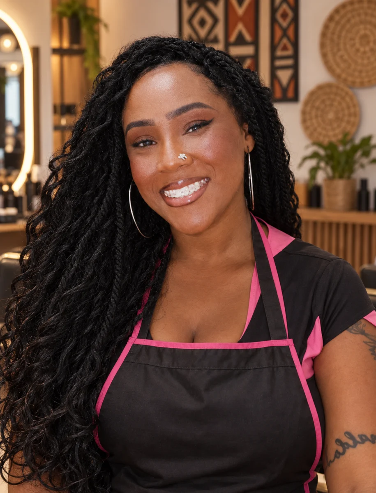
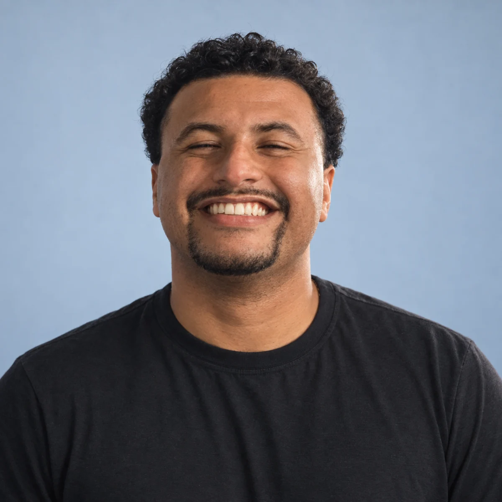

Trabalhos selecionadosO trabalho fala.
A apresentação também.
Projetos reais. Diferentes negócios, uma mesma atenção à forma de se apresentar.
SITE + APRESENTAÇÃO PROFISSIONAL
Andressa Matos
Uma apresentação para mostrar a gastronomia, os serviços e o cuidado de Andressa em cada ocasião.
Explorar projeto
Gastronomia para eventos
Solução
Conteúdo organizado por serviços, galeria gastronômica, apresentação da profissional e jornada de contato.
Entregas
- Apresentação em PDF de 7 páginas
- Organização dos serviços e do conteúdo
- Imagem de apresentação
- Site de gastronomia
SITE + PORTFÓLIO + IMAGENS COM IA
Evy Braids
Um portfólio visual para apresentar Evellyn, suas referências de tranças e as possibilidades de atendimento.
Explorar projeto
Tranças, estilo e identidade
Solução
Composição editorial com cores marcantes, fotografias dos penteados e retratos criados com IA a partir de fotos de Evellyn.
Entregas
- Portfólio visual em PDF
- Retratos e aprimoramento de imagens com IA
- Organização das referências de penteados
- Site da Evy Braids


PORTFÓLIO PROFISSIONAL + SITE
Gustavo Etelvino
Uma apresentação da experiência profissional de Gustavo em processos, materiais e atendimento.
Explorar projeto
Administração, logística e operações
Solução
Conteúdo distribuído em perfil, trajetória, competências, formação e contato, com uma linguagem visual sóbria.
Entregas
- Portfólio profissional em PDF de 9 páginas
- Organização da trajetória e das competências
- Retrato de apresentação
- Site profissional


SITE + IMAGEM DE APRESENTAÇÃO
Galpão da Evy
Apresentação digital do Galpão da Evy, com foco na seleção de iPhones.
Explorar projeto
Seleção de iPhones
Solução
Imagem da representante como elemento de identificação do negócio. O site pode ser acessado no link abaixo.
Entregas
- Site do Galpão da Evy
- Imagem de apresentação da marca
Sobre Andrew
Presença digital
não é só aparência.
A forma como um profissional ou negócio se apresenta influencia a percepção de valor, confiança e profissionalismo.
Meu trabalho é organizar diferentes elementos da presença digital para criar uma apresentação mais clara, consistente e comercial.
Solicitar orçamento↗Vamos esclarecer.
Posso contratar apenas um serviço?
Sim. Os serviços podem ser contratados individualmente ou combinados em um projeto maior.
Você atende qualquer nicho?
O foco são profissionais autônomos, prestadores de serviço e pequenos negócios.
Preciso ter fotos profissionais?
Não necessariamente. Dependendo do projeto, podem ser desenvolvidas imagens profissionais com inteligência artificial.
Os sites são responsivos?
Sim. Os sites são preparados para desktop, tablet e celular.
Quanto tempo demora?
O prazo depende da complexidade e do escopo. Ele é definido na proposta.
O site inclui domínio e hospedagem?
Domínio e hospedagem são definidos separadamente conforme a necessidade do projeto.